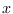

The PSBLAS library error handling policy has been completely rewritten
in version 2.0. The idea behind the design of this new error handling
strategy is to keep error messages on a stack allowing the user to
trace back up to the point where the first error message has been
generated. Every routine in the PSBLAS-2.0 library has, as last
non-optional argument, an integer info variable; whenever,
inside the routine, an error is detected, this variable is set to a
value corresponding to a specific error code. Then this error code is
also pushed on the error stack and then either control is returned to
the caller routine or the execution is aborted, depending on the users
choice. At the time when the execution is aborted, an error message is
printed on standard output with a level of verbosity than can be
chosen by the user. If the execution is not aborted, then, the caller
routine checks the value returned in the info variable and, if
not zero, an error condition is raised. This process continues on all the
levels of nested calls until the level where the user decides to abort
the program execution.
Figure 8 shows the layout of a generic psb_foo
routine with respect to the PSBLAS-2.0 error handling policy. It is
possible to see how, whenever an error condition is detected, the
info variable is set to the corresponding error code which is,
then, pushed on top of the stack by means of the
psb_errpush. An error condition may be directly detected inside
a routine or indirectly checking the error code returned returned by a
called routine. Whenever an error is encountered, after it has been
pushed on stack, the program execution skips to a point where the
error condition is handled; the error condition is handled either by
returning control to the caller routine or by calling the
psb\_error routine which prints the content of the error stack
and aborts the program execution, according to the choice made by the
user with psb_set_erraction. The default is to print the error
and terminate the program, but the user may choose to handle the error
explicitly.
|

|
Figure 9 reports a sample error message generated by
the PSBLAS-2.0 library. This error has been generated by the fact that
the user has chosen the invalid ``FOO'' storage format to represent
the sparse matrix. From this error message it is possible to see that
the error has been detected inside the psb_cest subroutine
called by psb_spasb ... by process 0 (i.e. the root process).
|
|